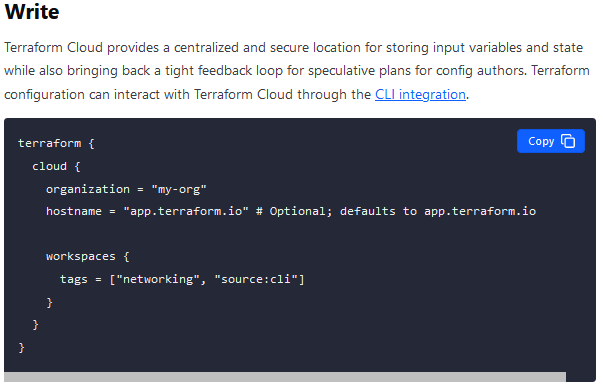

Plan
For teams collaborating on infrastructure, Terraform's plan output creates an opportunity for team members to review each other's work. This allows the team to ask questions, evaluate risks, and catch mistakes before any potentially harmful changes are made.
The natural place for these reviews to occur is alongside pull requests within version control--the point at which an individual proposes a merge from their working branch to the shared team branch. If team members review proposed config changes alongside speculative plan output, they can evaluate whether the intent of the change is being achieved by the plan.
The problem becomes producing that speculative plan output for the team to review. Some teams that still run Terraform locally make a practice that pull requests should include an attached copy of speculative plan output generated by the change author. Others arrange for their CI system to post speculative plan output to pull requests automatically.
Apply
Once a pull request has been approved and merged, it's important for the team to review the final concrete plan that's run against the shared team branch and the latest version of the state file.
This plan has the potential to be different than the one reviewed on the pull request due to issues like merge order or recent infrastructural changes. For example, if a manual change was made to your infrastructure since the plan was reviewed, the plan might be different when you merge.
It is at this point that the team asks questions about the potential implications of applying the change. Do we expect any service disruption from this change? Is there any part of this change that is high risk? Is there anything in our system that we should be watching as we apply this? Is there anyone we need to notify that this change is happening?
Depending on the change, sometimes team members will want to watch the apply output as it is happening. For teams that are running Terraform locally, this may involve a screen share with the team. For teams running Terraform in CI, this may involve gathering around the build log.
Just like the workflow for individuals, the core workflow for teams is a loop that plays out for each change. For some teams this loop happens a few times a week, for others, many times a day.
Apply
Once a pull request has been approved and merged, it's important for the team to review the final concrete plan that's run against the shared team branch and the latest version of the state file.
This plan has the potential to be different than the one reviewed on the pull request due to issues like merge order or recent infrastructural changes. For example, if a manual change was made to your infrastructure since the plan was reviewed, the plan might be different when you merge.
It is at this point that the team asks questions about the potential implications of applying the change. Do we expect any service disruption from this change? Is there any part of this change that is high risk? Is there anything in our system that we should be watching as we apply this? Is there anyone we need to notify that this change is happening?
Depending on the change, sometimes team members will want to watch the apply output as it is happening. For teams that are running Terraform locally, this may involve a screen share with the team. For teams running Terraform in CI, this may involve gathering around the build log.
Just like the workflow for individuals, the core workflow for teams is a loop that plays out for each change. For some teams this loop happens a few times a week, for others, many times a day.



Review resource drift
Terraform also accounts for the possibility that resources have changed outside of the Terraform workflow. As a result, the prior state may not reflect the actual attributes and settings of the resource at the time of the plan operation, which is known as state "drift". Terraform must reconcile these differences to understand which actions it must actually take to make your resources match the written configuration.
To determine whether state drift occurred, Terraform performs a refresh operation before it begins to build an execution plan. This refresh step pulls the actual state of all of the resources currently tracked in your state file. Terraform does not update your actual state file, but captures the refreshed state in the plan file.